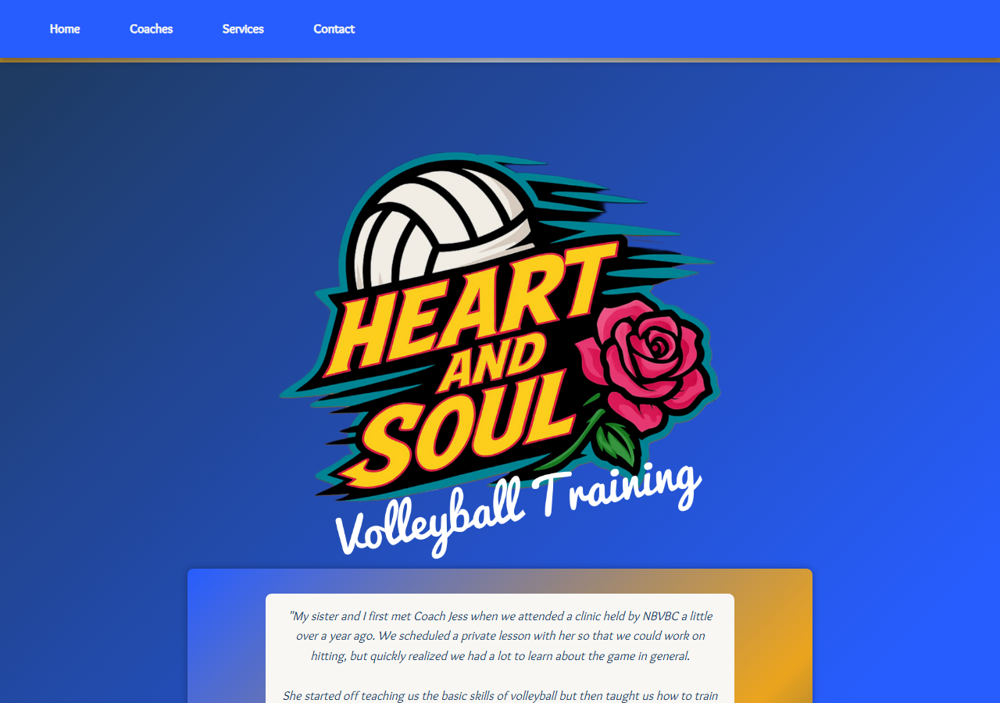

Trust through results
Coaching stories and athlete outcomes lead the experience.
Beta transmission / 005
Volleyball coaching grounded in fundamentals, confidence, and a genuine love of the game.

The idea
005 / HSHeart & Soul creates a clear digital home for personal volleyball training: introduce the coaches, explain the services, and let the voices of athletes and families show what the work feels like.
The product is built around trust. Progress is not abstract—it appears in stronger serves, smarter positioning, better teamwork, and athletes who believe in their game.
Coaching stories and athlete outcomes lead the experience.
Refine service discovery and the path from interest to training.
Celebrate disciplined progress and the love that keeps athletes learning.